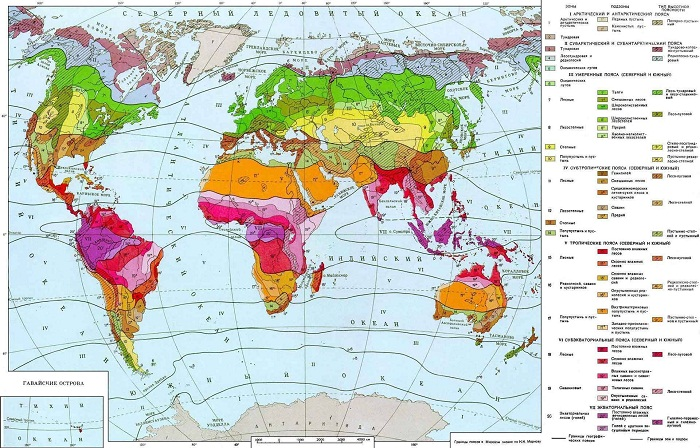
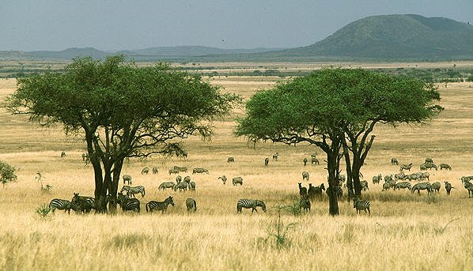
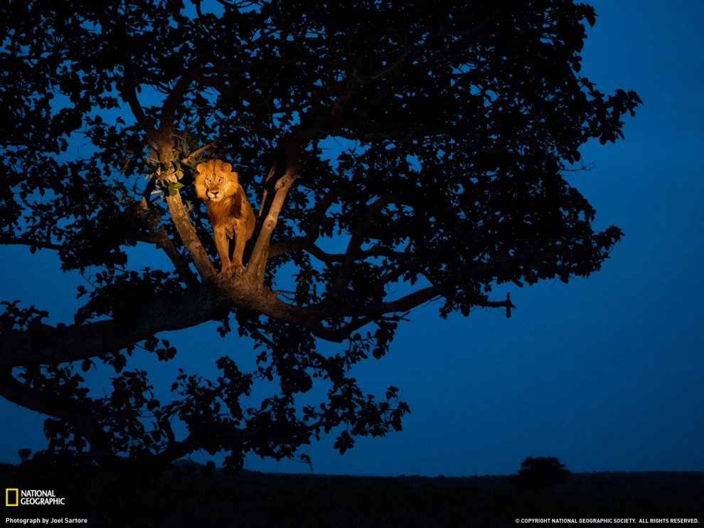

Posted on Февраль 19, 2013 by trampler
Саванны и редколесья – это природная зона, встречающаяся преимущественно в субэкваториальных поясах обоих полушарий, хотя участки саванн встречаются и в тропиках и субтропиках. Наиболее характерной чертой этой зоны является сезонно-влажный климат с чёткой сменой периода дождей и засухи, который и обуславливает сезонный ритм всех природных процессов, также характерно преобладание ферраллитных почв и травянистой растительности с редкими, отдельно стоящими, группами деревьев.

Смотрите географическое положение зоны саванн и редколесья на карте природных зон.
Наибольшая территория саванн располагается в Африке, занимая примерно 40 % всей её площади. Они также распространены в Южной Америке (в долинах реки Ориноко называются льяносами, а на Бразильском плоскогорье – кампосами), Австралии, на севере и востоке материка и в Азии (на Индо-Гангской равнине, Деканском плоскогорье и полуострове Индокитай).

Климат. Для природной зоны саванн и редколесий характерна пассатно-муссонная циркуляция воздушных масс, где зимой господствует сухой тропический воздух, а летом – влажный экваториальный. По мере удаления от экваториального пояса длительность дождливого сезона сокращается с 8-9 месяцев до 2-3 месяцев на внешних границах зоны. В том же направлении убывает и годовая сумма осадков (от 2000 мм до 250 мм в год). Также характерной особенностью саванн является сравнительно небольшие сезонные колебания температур (от 15 до 32 градусов), а вот суточные амплитуды могут быть существенны, достигая 25 градусов. Все эти характерные климатические особенности нашли отражение во всех компонентах природной среды саванн и редколесий.
Почвы саванн напрямую зависят от продолжительности периода дождей и характеризуются промывным режимом. Ближе к экваториальным лесам, там, где этот сезон длится до 9 месяцев, образуются красные ферраллитные почвы. На территории, где сезон дождей меньше 6 месяцев, характерны типичные саванные красно-бурые почвы, а на границах с полупустынями почвы малопродуктивны и с тонким слоем перегноя.

Природная зона саванн и редколесий очень активно осваивается человеком, что часто приводит к непоправимым её изменениям (например, процессам опустынивания).
Видео: «African Savanna» by Pim Niesten.